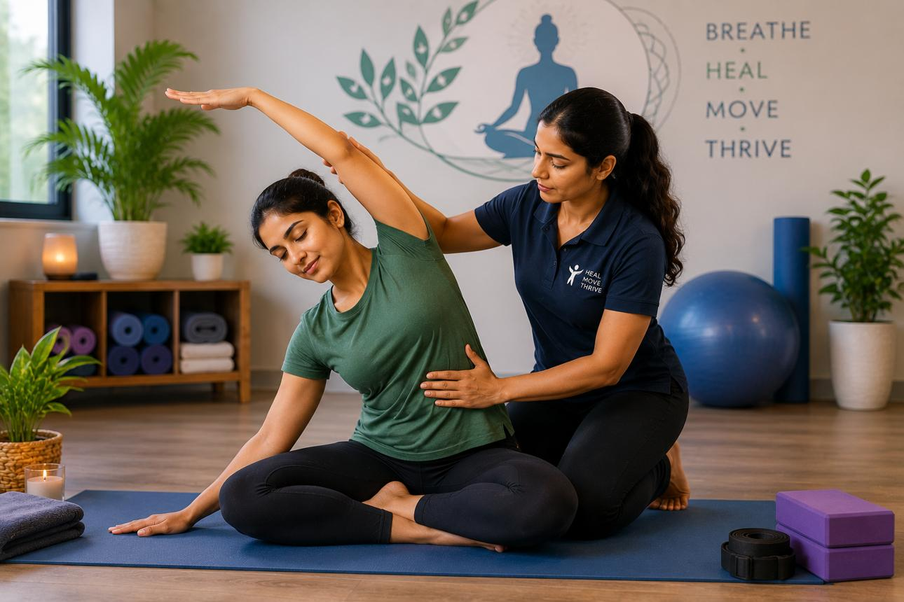
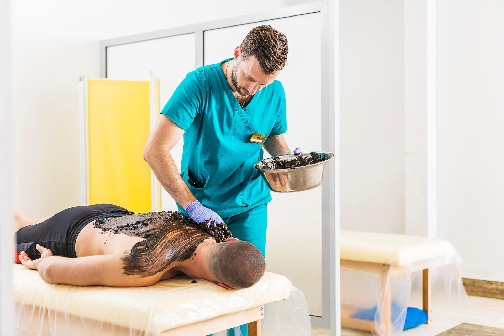
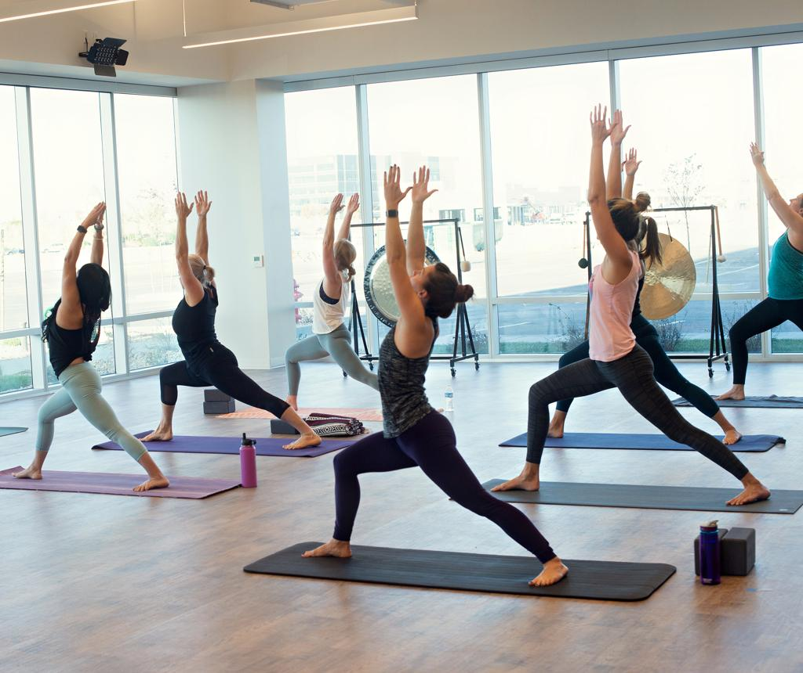
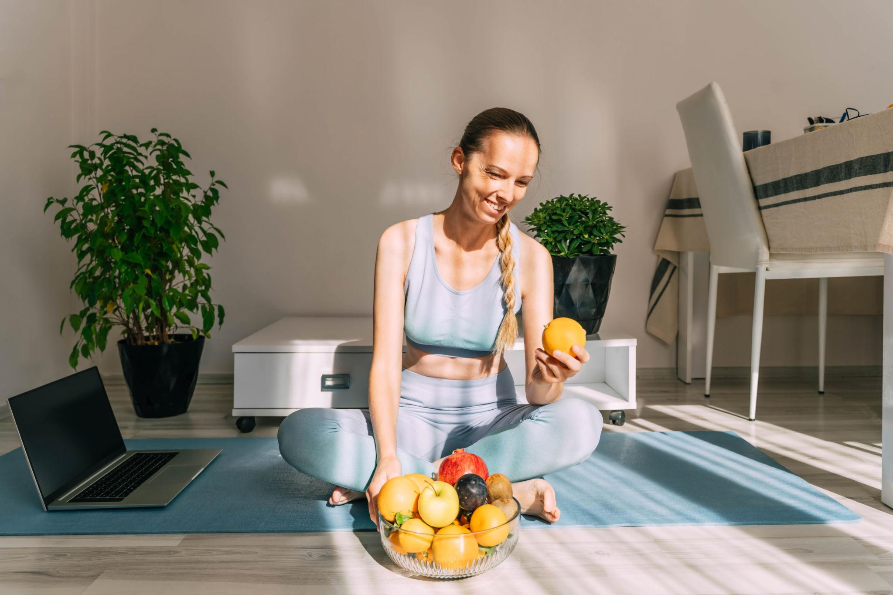
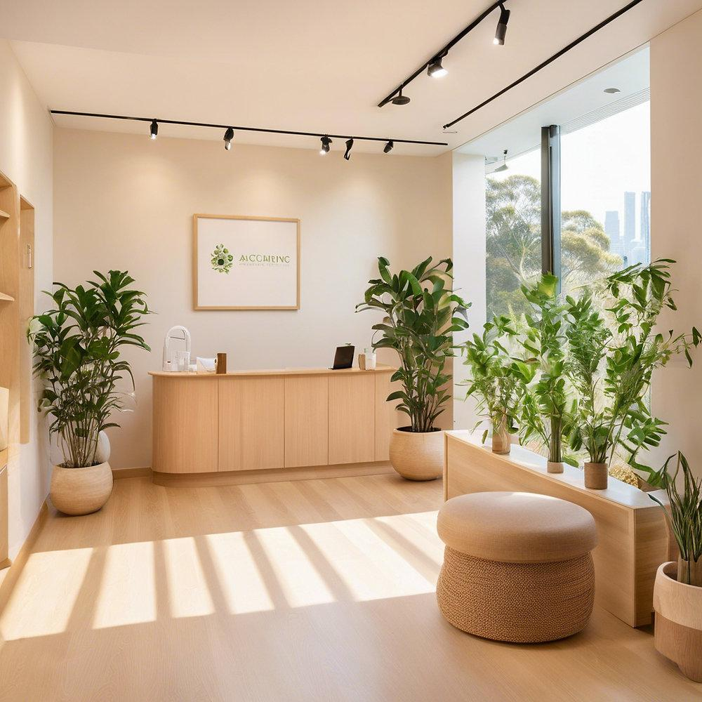
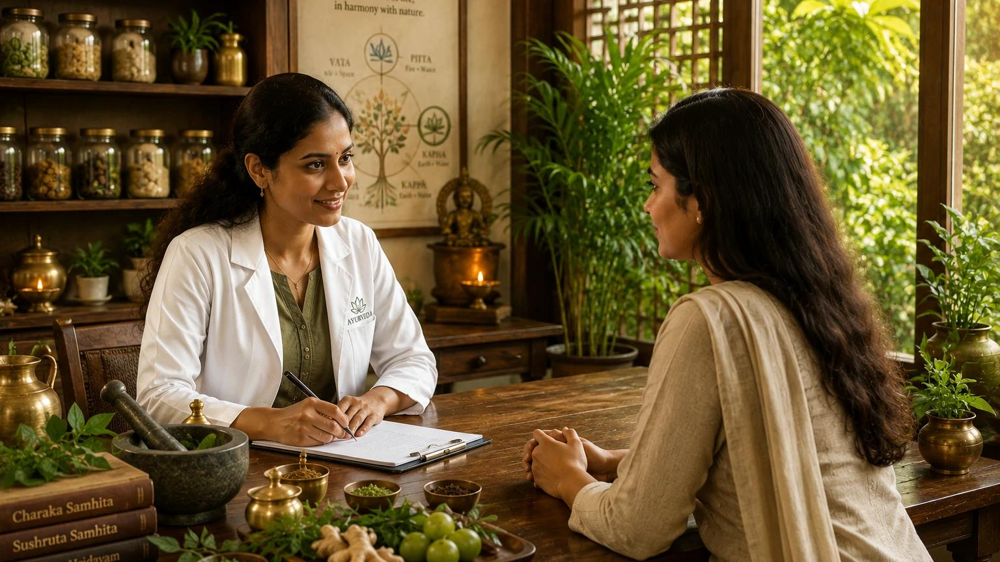
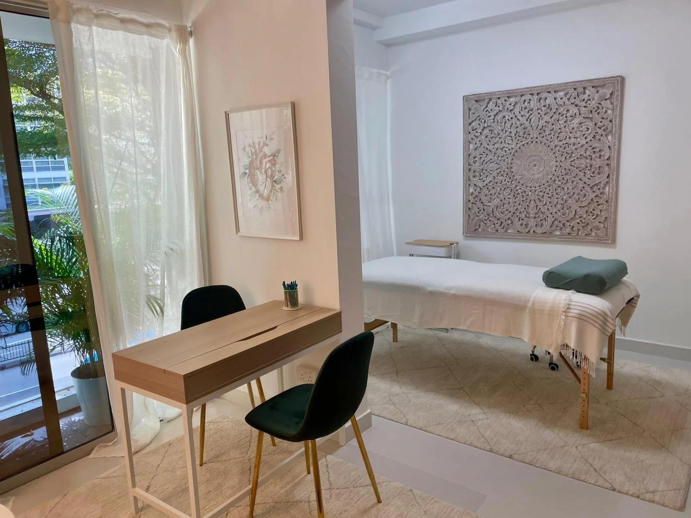
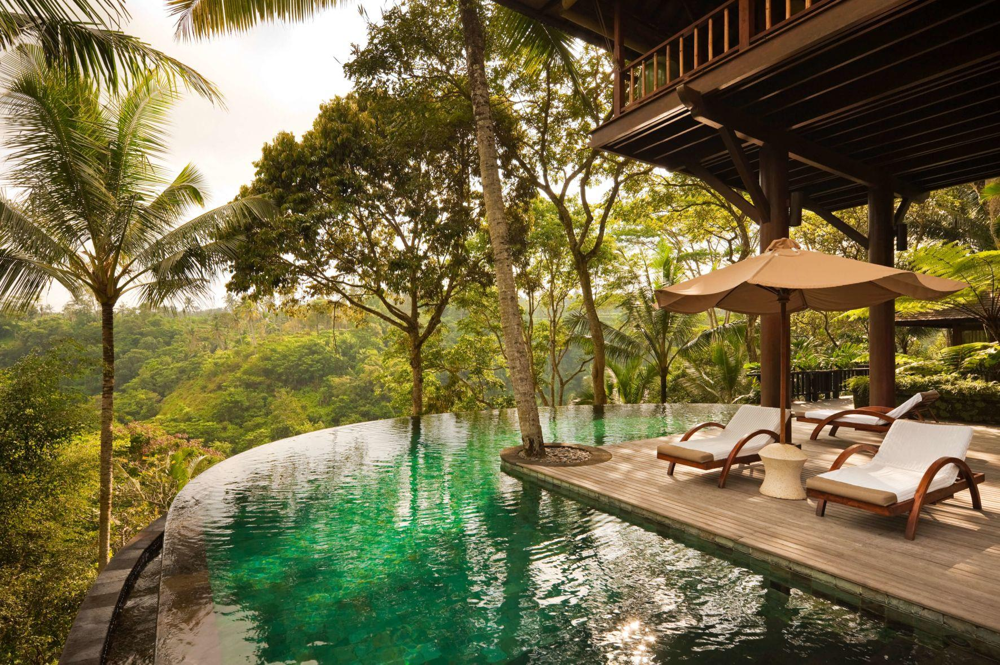

Select the wellness dimension you wish to explore today. Our interactive engine highlights personalized natural therapies, educational resources, and physician-led guidance tailored to your focus.

MovementRe-align physical posture, rebuild joint mobility, and release muscular bracing.
Select Focus → Restoration
Restoration
Down-regulate the autonomic nervous system through soothing somatic touch and stillness.
Select Focus →Cultivate daily circadian balance, restorative sleep patterns, and sensory rest.
Select Focus → Nourishment
Nourishment
Embrace wholesome seasonal plant nourishment, gentle hydration, and mindful digestion.
Select Focus →
Natural CareExperience earth, water, and heat elements including hydrotherapy and mud packs.
Select Focus → Physician Care
Physician Care
Meet with our certified naturopathic physicians for a holistic health review.
Select Focus →Targeted physical alignment, therapeutic yoga postures, and joint mobility to foster daily vitality.
Carefully orchestrated retreats that blend natural therapeutics, movement therapy, and educational seminars into transformative wellness milestones.

Experience 01A guided yoga-focused journey featuring gentle somatic movement, conscious breath awareness, and personalized joint alignment sequences.
 Experience 02
Experience 02
An experiential immersion into classical naturopathy practices including herbal steam baths, mineral clay packs, and hydro-toning.
 Experience 03
Experience 03
A peaceful haven of restorative yoga, sound healing, and deep breathing designed to silence mental chatter and restore inner peace.

Experience 04A holistic lifestyle program guiding you to structure daily circadian routines, nourishing meal schedules, and stress buffers.
Our intake process goes beyond superficial questionnaires. We evaluate your complete biomechanical posture, autonomic tone, and metabolic cadence.


Visual analysis of spinal curvature, shoulder leveling, hamstring tension, and pelvic tilt to identify mechanical compensations.
Every healing journey is deliberate, supportive, and grounded in professional consultation. Discover the six seamless milestones of your experience with Verdant Life.

Explore the center, available therapies, and our gentle wellness philosophy. Experience our sanctuary surroundings designed to cultivate tranquility before your first formal session.
Reach out directly to our admissions team. Submit your general wellness interests and request an initial one-on-one consultation with an appropriate practitioner.
Sit down with a qualified naturopathic physician. Discuss your health history, current habits, mobility comfort, and personal goals in a respectful clinical conversation.

Co-create a multi-modality wellness roadmap combining therapeutic yoga sessions, nature-based treatments, dietary suggestions, and home breathing routines.

Attend scheduled private or group sessions guided by certified therapists. Experience hydrotherapy baths, gentle restorative poses, and calming breathwork.

Seamlessly access your session schedules, personalized treatment roadmaps, and service receipts through our secure Patient Dashboard. Stay connected with follow-ups.
Every studio, treatment pavilion, and garden courtyard is crafted with natural timber, acoustic stillness, and daylight to support emotional and physical restoration.


Reflections from individuals who embraced natural therapies and therapeutic movement to restore calm, mobility, and healthy daily habits.
 Senior Mobility
Senior Mobility
"As an older adult, I was nervous about starting yoga. The instructors provided gentle props and individualized support. My posture feels lighter and I feel more confident in my daily walks."
Clear, honest, and transparent information regarding our treatments, consultations, and patient experience.
Naturopathy is a distinct system of primary healthcare emphasizing the body’s innate capacity for self-regulation and restoration. Utilizing natural modalities such as hydrotherapy, mud therapy (pelotherapy), plant-based nutrition, restorative lifestyle counseling, and botanical applications, naturopathy seeks to identify underlying lifestyle imbalances rather than merely masking discomfort. It does not replace emergency acute medicine, but complements overall health through non-invasive, drugless therapies.
During your 60-minute intake, you meet one-on-one with a certified naturopathic doctor. The specialist reviews your health history, daily schedule, dietary rhythms, stress levels, and movement habits. Together, you discuss personal wellness interests and establish a realistic, supportive care plan incorporating suitable yoga therapies, natural treatments, and lifestyle adjustments.
Verdant Life offers six distinct therapeutic yoga modalities: Therapeutic Hatha Yoga for joint alignment, Restorative Yoga for nervous system down-regulation, Gentle Yoga for seniors and mobility seekers, Pranayama Breathing Practices, Guided Mindfulness Meditation, and Somatic Movement Therapy. All sessions are adapted with props to honor individual anatomical needs.
You can explore our complete therapy catalog on our dedicated Therapies Page, use our interactive Wellness Discovery Tool above, or schedule an exploratory phone consultation with our admissions team to identify which category resonates with your goals.
No previous yoga experience is required. Therapeutic yoga is not an acrobatic fitness class; it is an individualized, gentle healing practice. Our instructors provide personalized modifications, bolsters, and straps so that participants of any age, fitness level, or body type can practice safely and comfortably.
You can submit an enquiry through any "Enquire Now" button on our website, visit our Contact & Consultation Page, or call our admissions desk. Our team will guide you through session formats, duration options, and physician availability.
Yes. All registered patients receive access to our secure Patient Portal where you can review upcoming therapy appointments, session calendars, specialist notes, and pending follow-ups in real time.
Within the Patient Portal under "My Treatment Plan" and "My Documents," you can view personalized care summaries, schedule history, and printable sample receipts for your personal records or wellness allowance documentation.
Speak with our admissions specialists today to discuss personalized therapies and schedule your initial consultation.